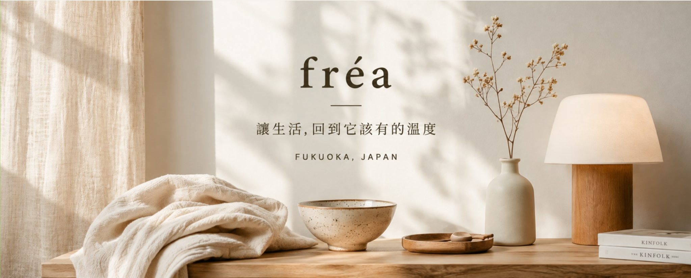

Featured Brands
精選品牌


自選代購 / Personal Shopping
找不到想要的日本商品？提供商品名稱、連結與數量，我們確認供貨與相關費用後提供報價。您確認價格並同意購買、完成匯款後，我們再於日本下單，商品可直接寄至您指定的台灣地址。
前往填寫代購需求About fréa
fréa，源自古英語，意為「主人」。我們相信，「家」不是一個地方，而是一種被用心對待的狀態。fréa 誕生於日本福岡，從日常生活中挑選那些安靜融入生活、值得被長久使用的物件。
關於 fréa